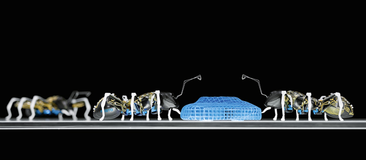
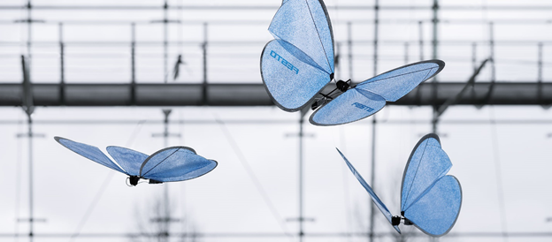
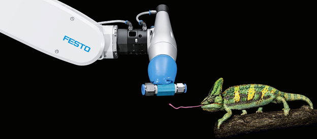

Bionic Learning Network is a research initiative established by the German control and automation company Festo, in collaboration with universities, institutes, and other companies.
The definition of the term bionics precisely summarizes the objective of the network: application of biological methods and systems found in nature to the study and design of engineering systems and modern technology (source: Wikipedia).
In an older blog, I wrote about Festo's SmartBird, an artificial bird that flies by flapping a pair of wings. The Bionic Learning Network has developed many other fascinating innovative engineering devices by adopting insights from biological systems and phenomena.
The full list of the bionic projects undertaken by the research institute at Festo can be found at:
BionicANTs – are mechatronic miniature ants, which similar to their natural counterparts have abilities for cooperative behavior in accomplishing a common task.

Figure: BionicANTs
eMotionButterflies – are bionic butterflies built from lightweight materials with a capacity for coordinated flying behavior.

Figure: eMotionButterflies
FlexShapeGripper – is a gripper that employs an elastic silicon cap for grasping objects with different shapes, inspired by a chameleon's tongue.

Figure: FlexShapeGripper
Bionic Kangaroo – is a mechatronic kangaroo that employs pneumatic actuators for hopping around.